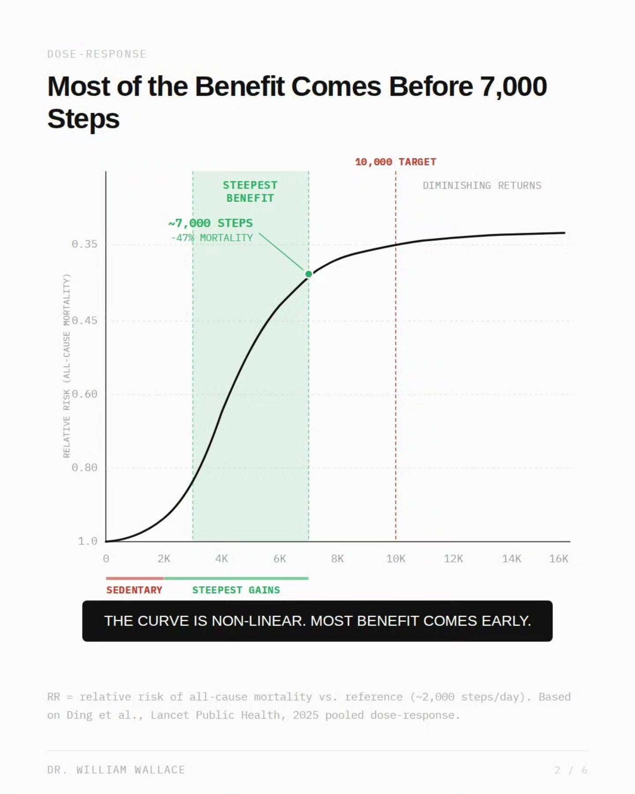

Regular exercise is one of the few interventions that the group's posts treat as beneficial for almost everyone, and the main practical message is that most people do not need extreme programs to benefit. Daily walking, some higher-intensity work and a modest amount of strength training each appear to contribute something different, and they seem to add up when combined159.
The posts also pull in two directions. On one side are randomized trials and large cohorts showing improvements in fitness, blood pressure, glucose, plaque and mortality. On the other side, Louis Nervegna repeatedly argues that intense exercise "has risks, as well as benefits, just like any other intervention," especially when high intensity is combined with high volume, while stressing that the typical person's problem is getting too little exercise rather than too much6.
Why exercise matters for the arteries and heart
The posts describe several overlapping routes by which exercise may protect the cardiovascular system.
- Fitness and heart stiffness. Poor fitness in middle age is a risk factor for heart failure with preserved ejection fraction, a condition thought to arise from a stiffening left ventricle (the heart's main pumping chamber)4. One shared explanation ties this stiffening partly to glycation, where sugar molecules cross-link collagen in heart muscle, and notes that exercise clears glucose from the blood4.
- Glucose handling. William Wallace, in a post Louis shared, explains that muscle contraction after a meal activates GLUT4 glucose transporters independently of insulin, so glucose enters muscle faster, with lower peaks and less demand on the pancreas12. Muscle is also described as a "glucose sink"13.
- Plaque. A review shared by Louis states that regular moderate-to-high intensity exercise reduces coronary plaque burden in people with coronary artery disease, and that combining exercise with aggressive LDL control below 70 mg/dL gives an additive benefit, especially after an acute coronary syndrome or stenting14.
- Hormesis. Hormesis is the idea that mild, repeated stress produces beneficial adaptation. A single bout of exercise causes an immediate dip in flow-mediated dilation, a measure of artery-lining function, which typically rebounds to or above baseline within about an hour and is believed to build long-term benefit15. Louis also recommends Daniel Lieberman's talk on why exercise grows more potent for longevity with age16.
- Fitness at any calcium score. Louis states that among people with the same coronary artery calcium score, the one who exercises has a much lower heart attack risk over the next 20 to 25 years. The post gives no specific study or numbers17.
Walking and daily steps
Walking is where the group's evidence is most consistent, and Louis's repeated advice is "if you do nothing else, at least walk"1819.
The 2025 Lancet Public Health meta-analysis
Louis summarized a meta-analysis that drew on 57 studies from 35 cohorts in the systematic review and 31 studies from 24 cohorts in the pooled analyses. Compared with 2,000 steps a day, 7,000 steps a day was associated with1:
- 47% lower all-cause mortality
- 25% lower cardiovascular disease incidence
- 47% lower cardiovascular disease mortality
- 37% lower cancer mortality (the 6% lower cancer incidence was not statistically significant)
- 14% lower type 2 diabetes
- 38% lower dementia, 22% lower depressive symptoms and 28% lower falls
The authors reported inflection points at around 5,000-7,000 steps a day for several outcomes, meaning that the curve flattens, although risk continued to fall past 7,000 for some outcomes1. A related post highlights that some benefit was already seen at 4,000 steps compared with 2,000, and frames 7,000 as a more achievable target than the often-quoted 10,00012. Louis adds that the bulk of the mortality benefit happens below 7,000 steps, which matters most to people starting from a sedentary baseline11.

The 2023 meta-analysis of 226,889 adults
A separate 2023 meta-analysis in the European Journal of Preventive Cardiology (17 studies, 226,889 adults) found that every extra 1,000 daily steps was linked to a 15% lower risk of dying from any cause and every extra 500 steps to a 7% lower risk of cardiovascular death. At about 10,400 steps a day, cardiovascular mortality was nearly 80% lower than at the lowest step counts. Benefits began at roughly 4,000 steps, with no plateau seen up to 20,00019.
The two analyses differ on where benefits level off, and both are observational, so they show association rather than proof of cause. Together they suggest that any increase from a very low baseline matters, with the steepest gains at the low end11119.
Walking after meals and general movement
The glucose pathway above is offered as a rationale for moving after eating12. Dean Ornish's program, shared by Louis, emphasizes consistency over intensity and lists lower blood pressure, better insulin sensitivity and less inflammation as benefits of daily walking18.
Cardio and interval training
The 2-year trial that "reversed cardiac aging"
The most-discussed study in the group is the randomized controlled trial led by Dr. Benjamin Levine, published as Reversing the Cardiac Effects of Sedentary Aging in Middle Age in Circulation in 20184. As described in a post Louis shared3:
- 61 previously sedentary adults with an average age of 53 trained for 2 years.
- The program was 4-5 sessions a week: two high-intensity interval sessions of 4-minute intervals at 90-95% of maximum heart rate on a treadmill, two moderate sessions of 60 minutes at 70-75% of maximum heart rate, and one strength session.
- The control group did low-intensity stretching, balance and strength training three times a week.
- VO2 max (the maximum rate at which the body can use oxygen, a standard fitness measure) and baroreflex sensitivity (the body's blood pressure regulation reflex) improved, and the heart became more elastic.
- Listed limitations were that participants were healthy and that nutrition was not standardized.
Other posts describe the same trial with slightly different details: 5-6 hours of training a week making hearts "more like a 30-year-old's"20, or "about five hours" including two Norwegian 4x4 sessions21. The interval details also differ, from four minutes at about 80-90% of maximum heart rate with four minutes of active recovery4 to roughly 85-95% with three minutes of recovery at about 70%20. Anyone wanting to copy a protocol would need to check the original paper and discuss it with a doctor.
The Norwegian 4x4
The Norwegian 4x4 is four repeated four-minute hard efforts separated by active recovery. A video summary posted by Gokhan Can describes Rhonda Patrick's view that moderate-intensity exercise is ineffective for a significant portion of people and that vigorous interval training such as the 4x4 is more reliable for raising VO2 max4. The post also links a 2023 study in well-trained women in which aerobic high-intensity intervals raised VO2 max more than all-out sprint intervals4.
How much does intensity matter?
A Nature Communications study, relayed through a BoxLife Magazine article, reported that one minute of vigorous activity was equivalent to 4 minutes of moderate activity for all-cause mortality, 7.8 minutes for cardiovascular disease and 9.4 minutes for diabetes. Louis shared it while arguing that physiological levels of lactate are beneficial22. Another video Gokhan shared leaves a more cautious impression: its message, as he summarizes it, is that a moderate level of exercise seems optimal for stabilizing, and possibly reversing, plaque23.
A Circulation analysis of 16 disease categories and more than 200 diseases found that "weekend warriors" who concentrate activity into one or two days had risk reductions close to those of people who spread it across the week: hypertension risk was 23% lower versus 28% lower, and diabetes risk 43% versus 46% lower. The takeaway the post draws is that total weekly volume of at least 150 minutes of moderate-to-vigorous activity matters more than how it is distributed10.
Show data
| Weekend warrior (1–2 days) | Spread through the week | |
|---|---|---|
| Hypertension, % lower risk | 23% | 28% |
| Type 2 diabetes, % lower risk | 43% | 46% |
Exercise, plaque and cholesterol
Daniel Chong's summary, reposted by Louis, lists the CENIT trial (2022), in which supervised HIIT was linked to percent atheroma volume falling by 1.2% per year with no change in the control group, alongside drug trials such as PRECISE-IVUS, ZEUS, EVAPORATE and GLAGOV24. The post notes research suggesting that a 1% reduction in plaque volume may equate to a 20% reduction in event risk24. Louis also shared a review concluding that both HIIT and moderate continuous training can lead to plaque regression, and a systematic review summary indicating that combined aerobic plus resistance training improves total cholesterol, LDL and triglycerides more than either alone914.

Visceral fat
Louis states that cardio reduces visceral fat (the deep fat around organs) even without weight loss, and that resistance training does not share this effect, though the post is a video without a linked study25. A later post says vigorous exercise can reduce visceral fat without a calorie deficit26. Yet in another post, citing Whitehall II data in which waist circumference predicted late-life disability better than grip strength or BMI, Louis says nothing removes visceral fat more effectively than diet27. The claims are not necessarily in conflict, but the group has not settled how much weight exercise versus diet carries.
Strength training
The cardiovascular case
In December 2023 the American Heart Association issued an updated scientific statement concluding that resistance training, alone or with aerobic training, is safe and effective for improving cardiovascular health and risk factors in adults with and without cardiovascular disease. Louis highlighted this as the AHA now formally recommending weight lifting28.
The largest dataset shared is the Harvard Nurses' Health Study 1 and 2 and the Health Professionals Follow-up Study, covering about 147,000 people over 30 years5:
- 90-120 minutes a week of strength training: 13% lower all-cause mortality, 19% fewer cardiovascular deaths and 27% fewer neurological deaths compared with none, with no added benefit beyond 120 minutes.
- Cancer mortality: 21% lower risk at 1-30 minutes a week and 18% at 30-60 minutes, with the benefit disappearing beyond 60 minutes (the authors speculated about IGF1).
- Aerobic activity above 7.5 MET-hours a week (a MET-hour is a unit of exercise energy; 7.5 is a little under 2 hours of brisk walking) was linked to 26-43% lower risk of death.
- Combining strength and high aerobic volume gave the largest reductions in mortality, 45-58%, though these required roughly 7 to 15 hours of brisk walking-equivalent a week.
- In women, at least 120 minutes of resistance training a week was linked to 20% lower risk of major heart disease and 44% lower risk of heart attacks.
Louis cautions that reverse causality probably played a major role, since healthy people are more able to do strength and aerobic exercise to begin with, and "it is impossible to know how much of the benefit in this study was due to forward vs reverse causality"5.
Metabolic and muscle benefits
- Prediabetes. In the 2017 Resist Diabetes randomized trial of sedentary adults aged 50-69, two machine-based resistance sessions a week with low-to-moderate weights returned more than one-third of participants to normal blood sugar within 12 weeks13.
- Weight loss. In a 16-week trial of 82 people with type 2 diabetes, fat-free mass changed by -2.7% with diet alone, -1.9% with moderate exercise and -0.2% with high exercise (six sessions a week), while body fat loss was 3.5%, 6.3% and 8.0% respectively. Louis uses this to argue that most muscle lost during calorie restriction, including with GLP-1 drugs, can be prevented by resistance exercise29.
- Older age. A story of an 81-year-old and an 82-year-old who progressed to squats and deadlifts after nine months of coached, twice-weekly barbell workouts is an illustration, not evidence30. A shared MRI study of 40 athletes aged 40-81 found that leg muscle density in those in their 70s and 80s resembled that of athletes in their 40s, which suggests that much age-related decline reflects inactivity, although the design is cross-sectional31.
- Sarcopenia and the heart. A Circulation review notes that sarcopenia (loss of muscle strength, mass and function) is linked to faster progression of cardiovascular disease and a higher risk of mortality and falls, and Louis adds that regular resistance exercise is the best way to prevent it32.
- Blood pressure. A post Louis shared claims isometric exercise, especially wall squats (four 2-minute holds with 2 minutes of rest, three times a week), lowered resting blood pressure more than cardio, intervals or weights, by about 9.4 points of systolic pressure in one trial. The post stresses never holding the breath and checking with a doctor if you have heart disease33. Louis calls it worth a try; the underlying review is not named in the post.
Protein and strength
Louis has posted many times that protein alone does not build strength. He cites a meta-analysis of 69 randomized trials (mean 22 weeks) in which, with resistance training, strength rose 0.72% per extra 0.1 g/kg/day of protein up to 1.5 g/kg/day, with no gain beyond that and none without training. He reads this as about 5% extra strength from the RDA to 1.5 g/kg, with most benefit coming from the exercise itself3435. A 36-trial meta-analysis in nonfrail adults over 65 found no benefit of extra protein on grip, leg strength, walking speed, chair rise or muscle mass, with or without exercise, while exercise itself helped36. These are Louis's interpretations and he acknowledges that frail people may differ3637.
Nuances, risks and controversies
The benefits may be smaller than observational studies suggest
Louis argues the exercise-longevity literature is "fraught with genetic confounding and reverse causality." In a 30-year Finnish twin study of roughly 22,000 participants, identical twins who differed in activity showed much smaller differences, and once people with early cardiovascular disease were excluded the longevity benefit of exercise "all but disappeared," according to the article he quoted. The study found a maximum of about 7% lower mortality and a U-shaped curve for biological aging, with both sedentary and highly active people showing faster aging8. The article's conclusion was that exercise may not add many years but improves healthy aging8. The same caution appears in his comments on the Harvard cohort data5.
The downsides of very high volumes and intensities
- A 2026 Circulation analysis of the Master@Heart study linked wearable-measured training load with coronary atherosclerosis on coronary CT angiography in middle-aged and older athletes and active controls. Louis calls the signal impossible to ignore, while saying the net benefit of exercise remains large for the average person6.
- A 2026 joint clinical consensus statement of the European Association of Preventive Cardiology and the American College of Cardiology covers atrial fibrillation, bradyarrhythmias, ventricular arrhythmias, coronary atherosclerosis, aortic dilatation, myocardial fibrosis and exercise-induced arrhythmogenic cardiomyopathy in masters athletes. It says exercise reduces cardiovascular events and mortality but that masters athletes may have more of these abnormalities than less active peers. Louis notes the preponderance of evidence still suggests a net benefit in total mortality for these athletes, with serious harm in some subsets7.
- Extreme endurance exercise such as marathons or triathlons has been associated with atrial fibrillation, though a cardiologist quoted in a shared post says exercise still usually lowers blood pressure, cholesterol and diabetes risk and overall death risk38.
- A review shared by Louis states that very high volumes or very vigorous exercise might paradoxically increase coronary calcification, although often as more stable calcified plaque14.
- A small ASCO 2025 study suggested intensive long-distance running may be linked to advanced colon adenomas, and Louis uses it to argue for treating intense exercise like any intervention with benefits and possible risks39.
- An AHA story about a 39-year-old marathoner who kept exercising through chest tightness before a heart attack shows that being active does not rule out heart disease40.
Louis adds that influencers overstate the case for large amounts of high-intensity exercise, and that VO2 max is oxygen consumed per kilogram of body weight, so it can rise through weight loss alone641.
Markers versus causes
Louis notes that grip strength predicted mortality better than blood pressure in the PURE study (139,691 adults, every 5 kg lower grip tracked with 16% higher all-cause mortality), but he emphasizes that grip strength is a marker, not a cause. Treating blood pressure lowers risk, whereas doing handgrip exercises only improves the test42. The same reasoning is worth applying to other fitness numbers.
Supplements and drugs around exercise
In older women with sarcopenia, adding vitamin C (1,000 mg) and E (335 mg) to 12 weeks of resistance band training was associated with greater muscle and strength gains, which Louis uses to question the idea that antioxidants blunt exercise adaptation4344. In the 6-month DEMFOS trial of 114 older adults with obesity, metformin neither blunted nor boosted the gains from exercise and diet45. No drug is approved for sarcopenia, and non-drug measures remain first-line46.
What this means for you
This is not individual medical advice; anyone with heart disease, symptoms (including chest tightness, even in a fit person40) or medications should discuss a plan with their doctor first. The posts point to these ideas:
- Start with walking. About 4,000 steps showed benefit and 7,000 captured most of it in one meta-analysis, and the 2023 analysis found continued gains up to 20,00011119.
- Aim for total weekly volume. At least 150 minutes of moderate-to-vigorous activity mattered more than how it was spread through the week10.
- Add some intensity. The Levine trial used two interval sessions a week inside a larger program, and the vigorous-versus-moderate data suggest short intense bouts are time-efficient322.
- Add strength training twice a week or so. The Harvard data link roughly 90-120 minutes a week to lower mortality, and the Resist Diabetes trial used two sessions a week513.
- Do not expect protein to replace training. Louis's reading of the trials is that resistance exercise drives strength gains3436.
- Be wary of extremes. Louis suggests high-volume intense exercisers, particularly masters athletes, weigh risks and benefits for their own situation67.
Frequently asked questions
Is 10,000 steps a day necessary?
Not according to the shared analyses. Compared with 2,000 steps a day, 7,000 captured most of the mortality benefit in the Lancet Public Health meta-analysis, and Louis stresses that most of the gain comes at lower counts1211. The 2023 meta-analysis found benefit continuing to 20,000 steps19.
Can exercise really reverse heart aging?
A 2-year randomized trial in sedentary 50-year-olds found improved heart elasticity and VO2 max, and posts describe this as reversing up to 20 years of cardiac aging. The participants were healthy and nutrition was not standardized, so the results may differ in people with heart disease320.
Is HIIT better than moderate exercise?
The posts show both sides. Studies shared by the group suggest vigorous minutes count for more than moderate minutes for mortality, cardiovascular disease and diabetes22, but a video summarized by Gokhan suggests moderate exercise may be best for plaque stabilization23. The group's more cautious voices note that high volume of high-intensity exercise has downsides7.
Can too much exercise be harmful?
Louis argues yes at extremes, citing Master@Heart, the masters athlete consensus statement and atrial fibrillation links6738. He stresses these concerns apply mainly to high-volume, high-intensity exercisers, not typical people6.
Is weight training useful for the heart or only for muscle?
The AHA statement describes resistance training as improving cardiovascular health and risk factors28, and the Harvard cohorts link it to fewer cardiovascular deaths, though Louis cautions about reverse causality5.